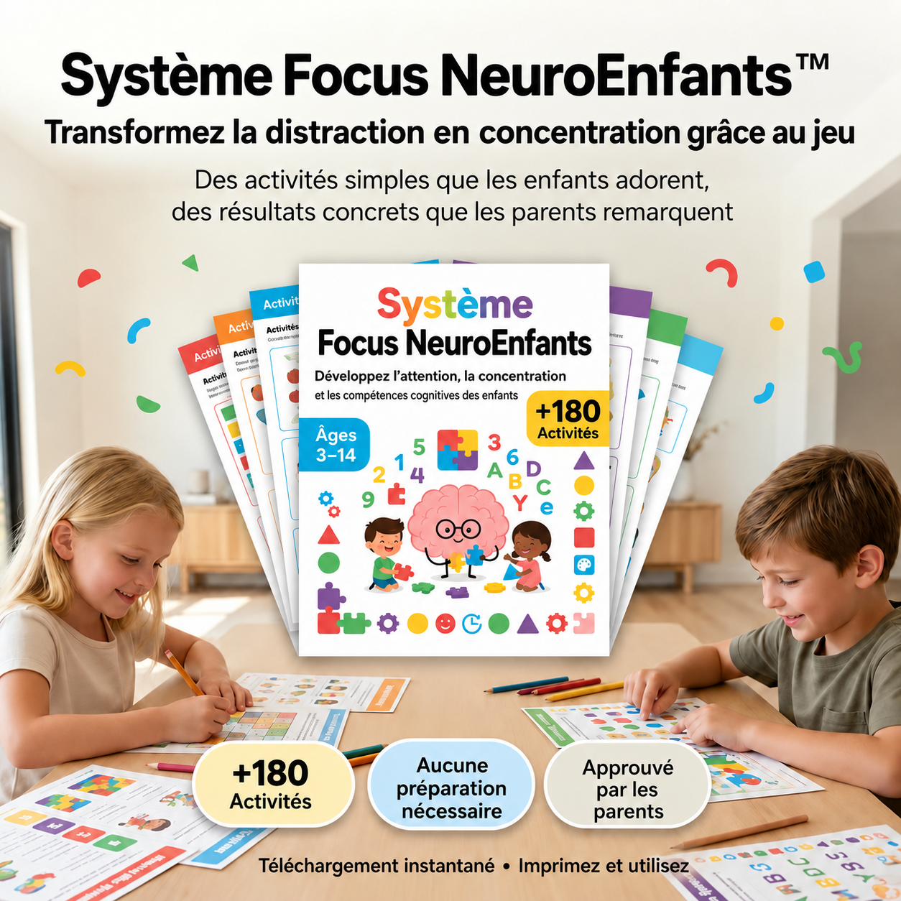
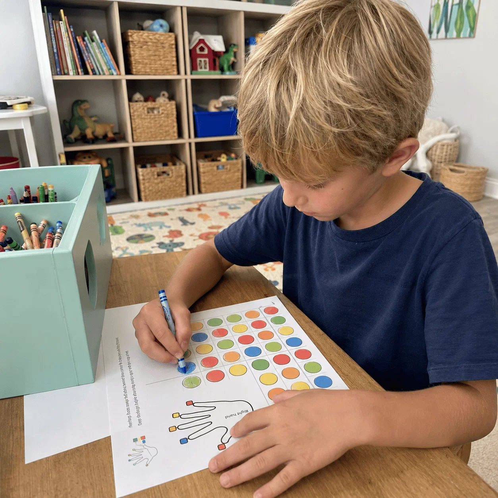
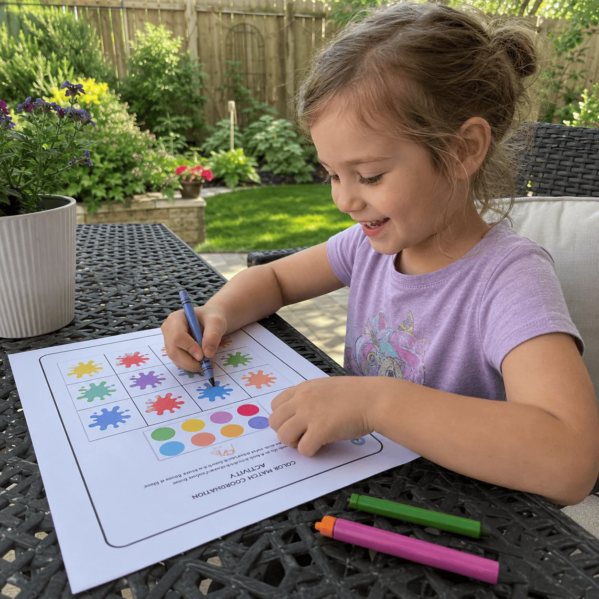
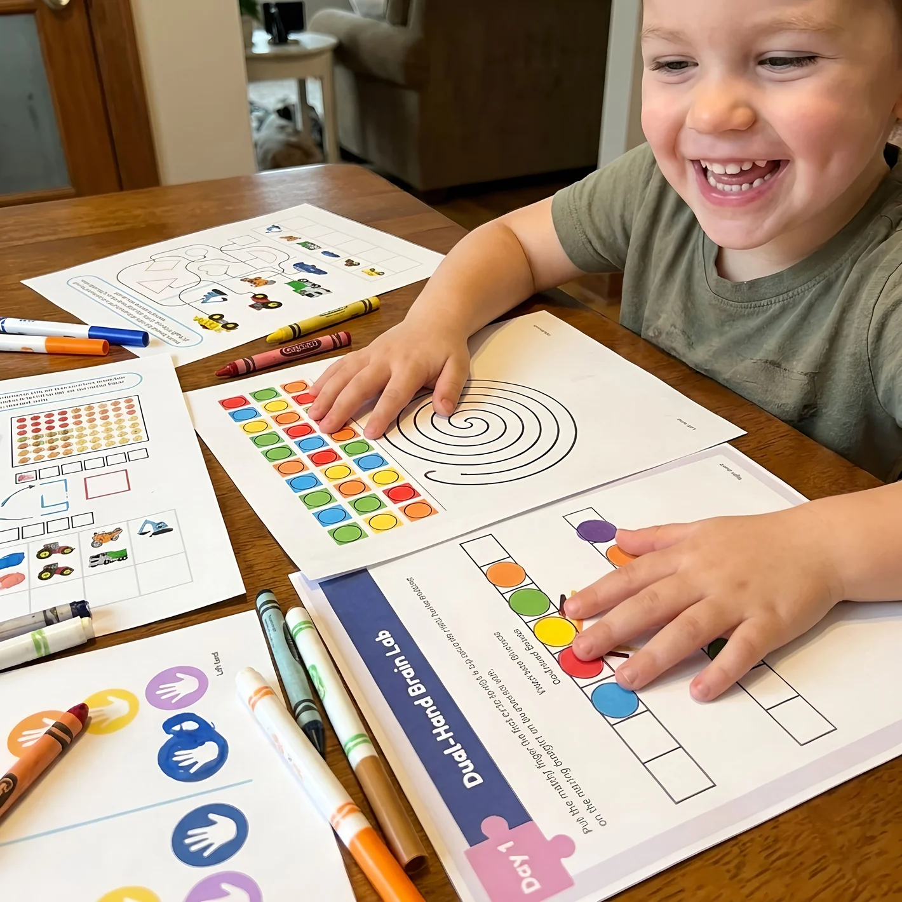
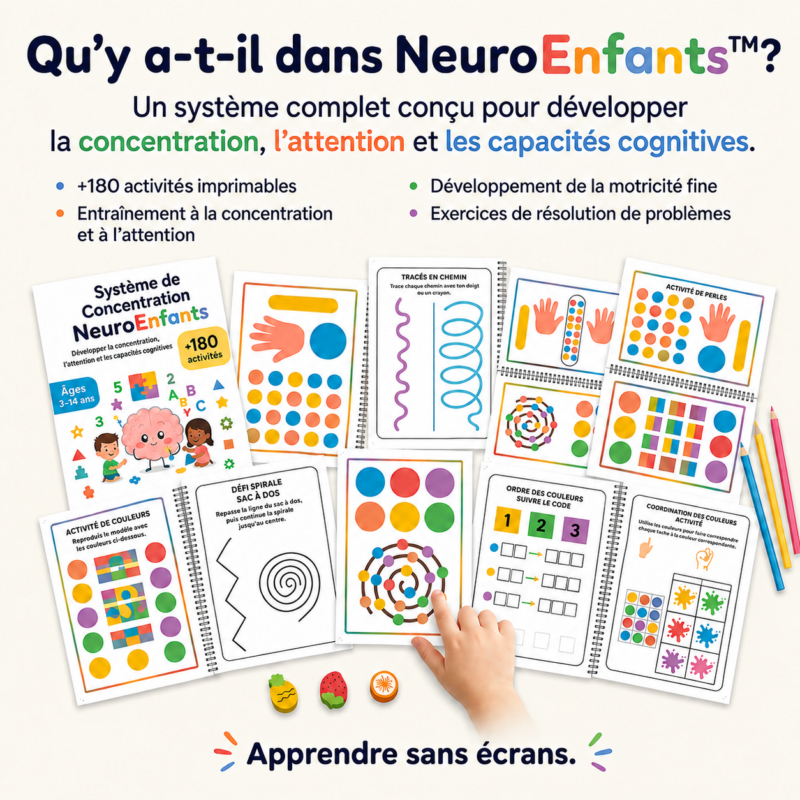
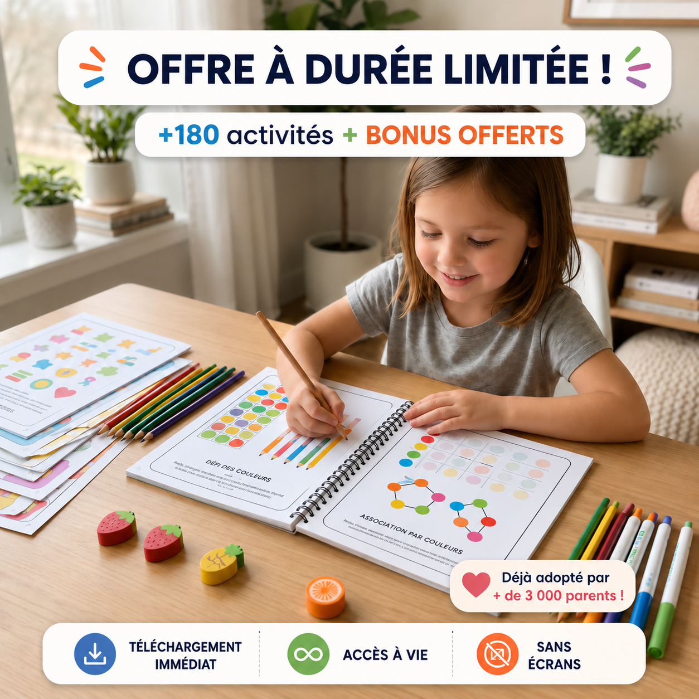

NeuroEnfants™ +180 activités pour booster l'attention, la concentration et l'apprentissage
Aide votre enfant à rester concentré et à terminer ses activités au lieu d'abandonner à mi-chemin.
Réduit la frustration et les luttes quotidiennes, transformant les moments « je n'y arrive pas » en confiance et fierté.
Crée des moments de jeu plus calmes après l'école ou avant le coucher, sans écrans ni disputes.
Idéal pour les enfants facilement distraits, agités ou qui semblent « dans leur monde ».
Développe les compétences réelles qui préoccupent les parents : attention, patience et maîtrise de soi.
Ressemble à un jeu pour votre enfant alors que vous savez qu'il apprend et entraîne sa concentration.
Seulement 10 minutes par jour : une routine simple et réaliste pour les parents qui veulent voir un vrai changement.
Camille R.
« NeuroEnfants a été une bénédiction pour mon enfant. Je le vois plus concentré, plus confiant et même enthousiaste à l'idée d'apprendre. Je n'aurais jamais imaginé qu'une chose si simple puisse faire une telle différence dans nos après-midis. Je le recommande du fond du cœur. »
L'OFFRE SE TERMINE AUJOURD'HUI / ACCÈS IMMÉDIAT PAR E-MAIL
Téléchargement immédiat • Imprimez et jouez • Accès à vie
Avec votre achat, vous recevez TOUS ces bonus GRATUITS !
🧠 Imaginez si votre enfant pouvait obtenir cela en seulement 10 minutes par jour…
- – Se concentrer plus vite sans écrans, cris ni frustration
- – Finir ses devoirs sans pleurer ni dire « je n'y arrive pas »
- – Gérer ses émotions sans crises
- – Apprendre plus vite et mieux retenir
- – Développer patience, calme et maîtrise de soi
- – Jouer tout en stimulant son cerveau (100 % sans écran)
C'est exactement ce que NeuroEnfants™ fait pour eux.
Pourquoi NeuroEnfants™ fonctionne-t-il si vite ?
- ✓ Conçu selon des principes inspirés de Montessori
- ✓ Stimule les 5 zones clés du cerveau
- ✓ Exercices courts mais puissants
- ✓ Progression simple, étape par étape
- ✓ Parfait pour les enfants actifs ou facilement distraits
- ✓ 100 % sans écran
- ✓ Des résultats visibles en quelques jours
Chaque activité est conçue pour activer des compétences cognitives que l'école n'enseigne pas… mais dont votre enfant a vraiment besoin.
Avant vs Après NeuroEnfants™
NeuroEnfants™
NeuroEnfants™
Ce que disent les autres parents :

Mon enfant avait du mal à se concentrer… maintenant il demande lui-même à faire ces activités tous les jours. Je ne l'ai jamais vu aussi motivé.

Le meilleur achat que j'ai fait pour mon enfant. Il est passé de la frustration à tout terminer avec le sourire.
Léa M.
Je pensais que rien ne fonctionnerait… mais en quelques jours seulement, mon enfant est passé d'une frustration constante au calme, à la concentration et au vrai plaisir d'apprendre !

Tout ce que votre enfant reçoit avec NeuroEnfants™
Plus de 180 activités incluses :
- 🟦 Activités de concentration et d'attention
- 🟩 Activités de renforcement de la mémoire
- 🟧 Formes et motifs
- 🟪 Séquences logiques
- 🟨 Tracé et motricité fine
- 🟫 Couleurs et associations
- ⬛ Coordination œil-main
- 🌀 Activités 100 % sans écran
- ✨ + TOUS les bonus offerts GRATUITEMENT (aujourd'hui seulement !)
- Programme numérique (accès immédiat)
- Activités étape par étape
- Aucun produit physique expédié

🎁 Offre spéciale – aujourd'hui seulement
Obtenez NeuroEnfants™ + 10 bonus GRATUITS avant que le prix ne remonte.
Comprend :
- ✓ Accès immédiat
- ✓ Plus de 180 activités imprimables
- ✓ 10 ressources bonus
- ✓ Utilisation à vie
Le cerveau de votre enfant se développe à chaque seconde… chaque jour compte.
POURQUOI CHOISIR NEUROENFANTS™
Des résultats visibles en quelques semaines
Améliore la concentration et l'attention
Boost de mémoire
Des activités qui renforcent la rétention et la compréhension
Économisez temps et argent
Des activités imprimables utilisables partout !
Simple et efficace
Seulement 10 minutes par jour
Questions fréquentes
Comment vais-je recevoir le produit ?
Juste après votre achat, vous recevrez un accès immédiat pour tout télécharger. Pas d'attente, pas de frais de port, vous pouvez commencer dès aujourd'hui.
Pour quel âge est-ce adapté ?
NeuroEnfants™ convient aux enfants de 3 à 14 ans. Les activités sont progressives, elles s'adaptent donc facilement au niveau de votre enfant.
Ai-je besoin d'une expérience d'enseignement ou d'une préparation spéciale ?
Pas du tout. Tout est conçu pour être simple, guidé et facile à suivre : n'importe quel parent peut le faire.
Et si mon enfant est très actif ou facilement distrait ?
Parfait : c'est exactement pour cela qu'il a été créé. NeuroEnfants™ aide les enfants à canaliser cette énergie de manière positive tout en développant leur concentration étape par étape.
Combien de temps avant de voir des résultats ?
La plupart des parents remarquent des changements en 3 à 7 jours : meilleure concentration, moins de frustration, mémoire améliorée, comportement plus calme. Chaque enfant est différent, mais les résultats arrivent généralement vite.
Ai-je besoin d'écrans ou d'internet ?
Non. Une fois téléchargé, tout est 100 % imprimable et totalement sans écran.
Combien de fois puis-je utiliser les activités ?
Autant de fois que vous le souhaitez. Vous bénéficiez d'un accès à vie : vous pouvez réutiliser et réimprimer les activités quand vous voulez.
Cela aide-t-il si mon enfant a un TDAH ou des difficultés d'apprentissage ?
De nombreux parents d'enfants qui ont du mal à se concentrer rapportent d'excellents résultats, car les activités sont courtes et captivantes, conçues pour améliorer la concentration, la mémoire et la logique, et utiles pour réduire la frustration. (Ce n'est pas un traitement médical, mais un outil de soutien puissant.)
Puis-je l'utiliser pour plus d'un enfant ?
Oui ! Vous l'achetez une fois et vous pouvez l'utiliser avec tous vos enfants.
Garantie 100 % tranquillité d'esprit
Essayez NeuroEnfants™ pendant 7 jours.
Si vous ne voyez pas de différence, nous vous remboursons.
Aucun risque. Aucune question posée.